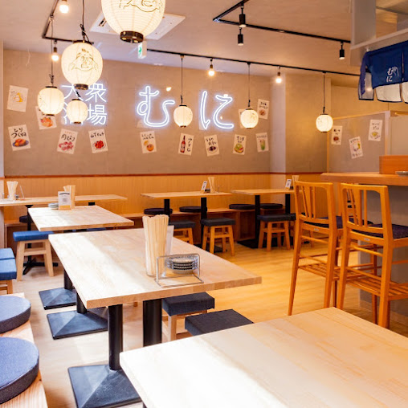
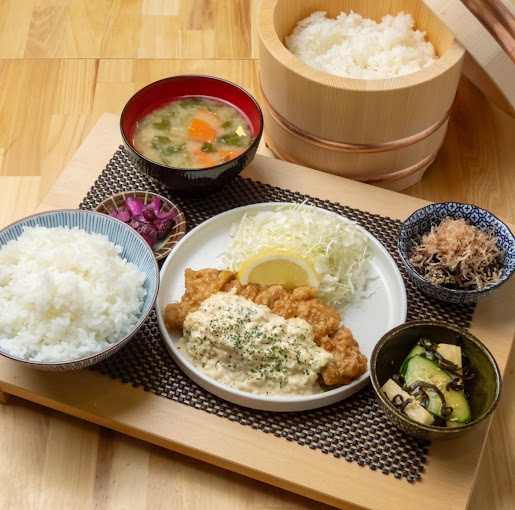
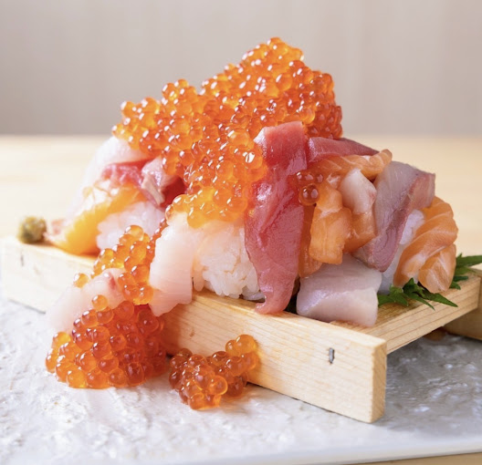
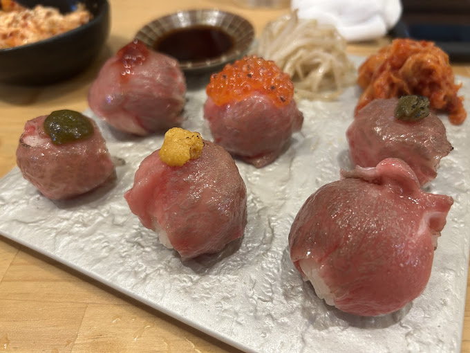
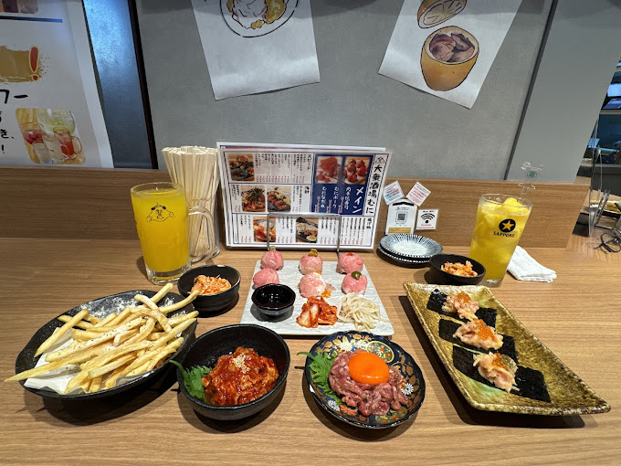
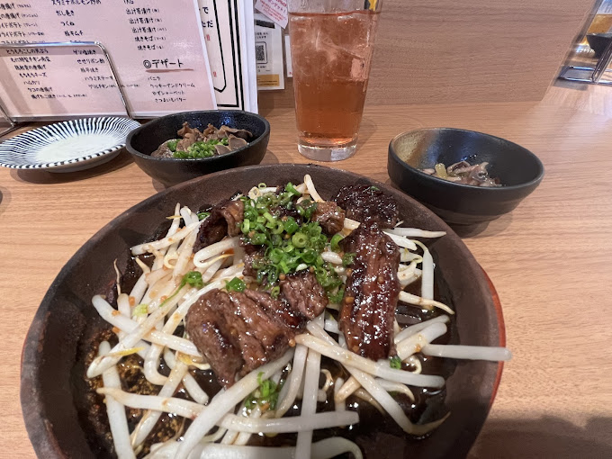
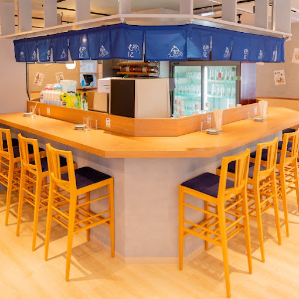
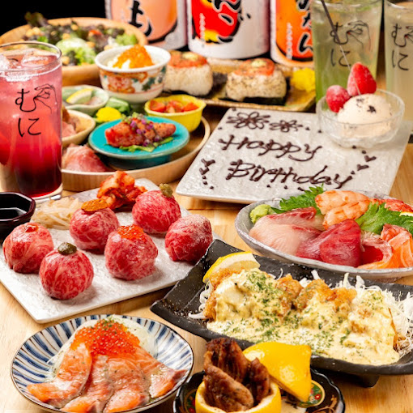
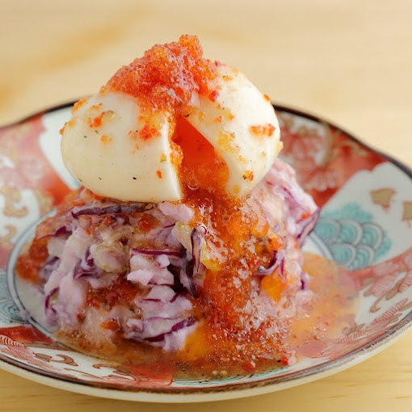
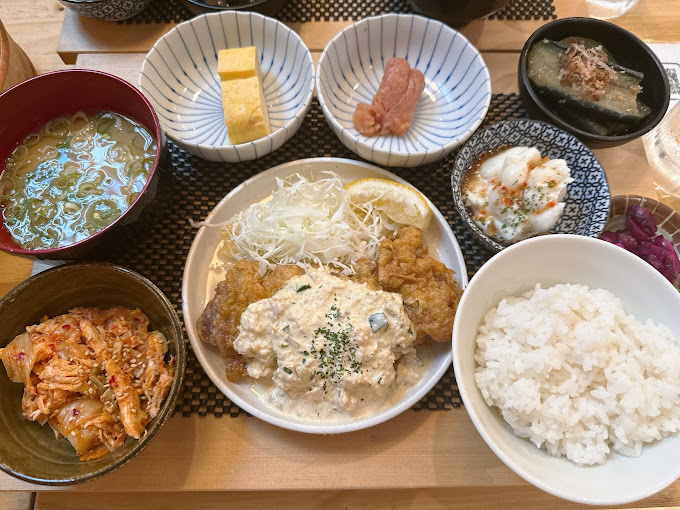

Galerie photos










Kevin, Loïc, May Nhia, Stéphanie, Estelle
Du 5 Avril au 27 Avril 2026
Izakaya moderne et très visuel à Kyoto, connu pour ses plats à partager, ses viandes/poissons bien présentés, ses formules boissons/repas et sa réservation en ligne pratique.










大衆酒場 むに 京都三条店 est une adresse pratique si on veut un repas de groupe à Kyoto dans une ambiance izakaya moderne, avec plats photogéniques, options à partager, boissons, et réservation web facile.
Conversion indicative sur base 1 EUR = 183.91 JPY. Le taux varie selon la date et la banque.
Les temps à pied varient légèrement selon la station et la sortie utilisée. Garde le lien Google Maps sur le téléphone.